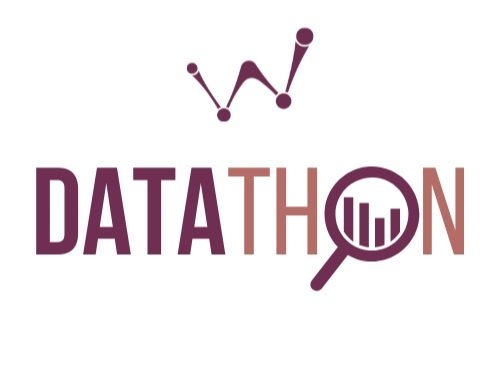

In the "Artificial Intelligence and Machine Learning" subject, I embarked on a comprehensive learning journey to explore the principles, algorithms, and applications of AI and ML.
Through practical assignments and hands-on projects, I gained expertise in various areas, including programming fundamentals, data manipulation, statistical analysis, machine learning models, and data visualization.


Assignment
Programming Fundamentals
I began with fundamental programming concepts, learning about variable declaration, conditional statements, and control flow structures. I gained proficiency in generating sequence numbers, managing functions, and working with data structures like lists, tuples, sets, and strings.
Functional Programming and Modules
I delved into functional programming paradigms, exploring the concepts of filter and map functions. Additionally, I learned to organize code by utilizing modules and packages effectively.
Descriptive Analytics and Visualization
I acquired essential skills in descriptive analytics, manipulating data to generate summary statistics and visualizing data through various plotting techniques. This enabled me to gain insights and draw meaningful conclusions from datasets.
Regression Models and Model Evaluation
I studied regression models, understanding how to build them and assess their performance. I learned to interpret regression model summaries, measure accuracy metrics such as ROC and AUC, and determine optimal cutoff points for binary classification tasks.
Decision Tree Classification and Ensemble Learning
I explored decision tree classification using Gini impurity, learning how to build decision trees and interpret their results. Additionally, I delved into ensemble learning methods like bagging and boosting to improve model performance.
Cross-Validation and Residual Analysis
I studied cross-validation techniques to assess model generalization and prevent overfitting. Moreover, I learned to perform residual analysis and generate residual plots to evaluate model goodness-of-fit.
TSM Datathon Participation
Within the college, I actively participated in the TSM Datathon, where I contributed to various aspects of the data analysis process
EDA and Descriptive Analysis
- I conducted exploratory data analysis to understand the dataset's structure and patterns.Data Visualization
- I employed visualization techniques to present insights and trends to the audience effectively.Model Building
- I developed machine learning models to predict outcomes and make data-driven decisions.Residual Analysis and Plot
- I performed residual analysis to evaluate the model's performance and identify potential areas for improvement.Correlation and Actual vs. Predicted Comparison
- I examined correlations between variables and compared actual versus predicted outcomes to assess model accuracy.Model Error Calculation
- I measured and analyzed model errors to gauge model performance and make necessary adjustments.Outcomes
- Developed a solid foundation in AI and ML principles, algorithms, and techniques.
- Acquired programming proficiency and the ability to manipulate data effectively.
- Mastered statistical analysis and machine learning model building.
- Gained expertise in data visualization to communicate insights clearly.
- Participated in real-world data analysis projects, honing practical skills in EDA, model building, and residual analysis.
Acquire a knowledge of:
The "Artificial Intelligence and Machine Learning" subject has provided me with extensive knowledge and practical skills in AI, ML, and data analysis. Through various assignments and the TSM Datathon, I have learned to apply programming fundamentals, build predictive models, and interpret their results accurately. I am now equipped to tackle complex data analysis tasks, extract valuable insights, and contribute to data-driven decision-making processes in diverse domains.